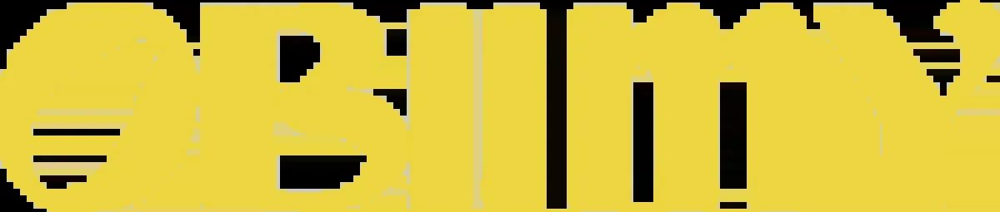
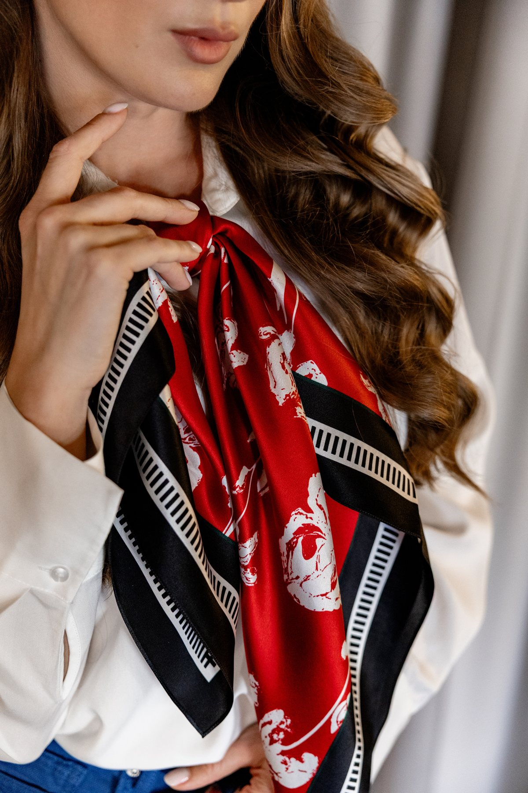
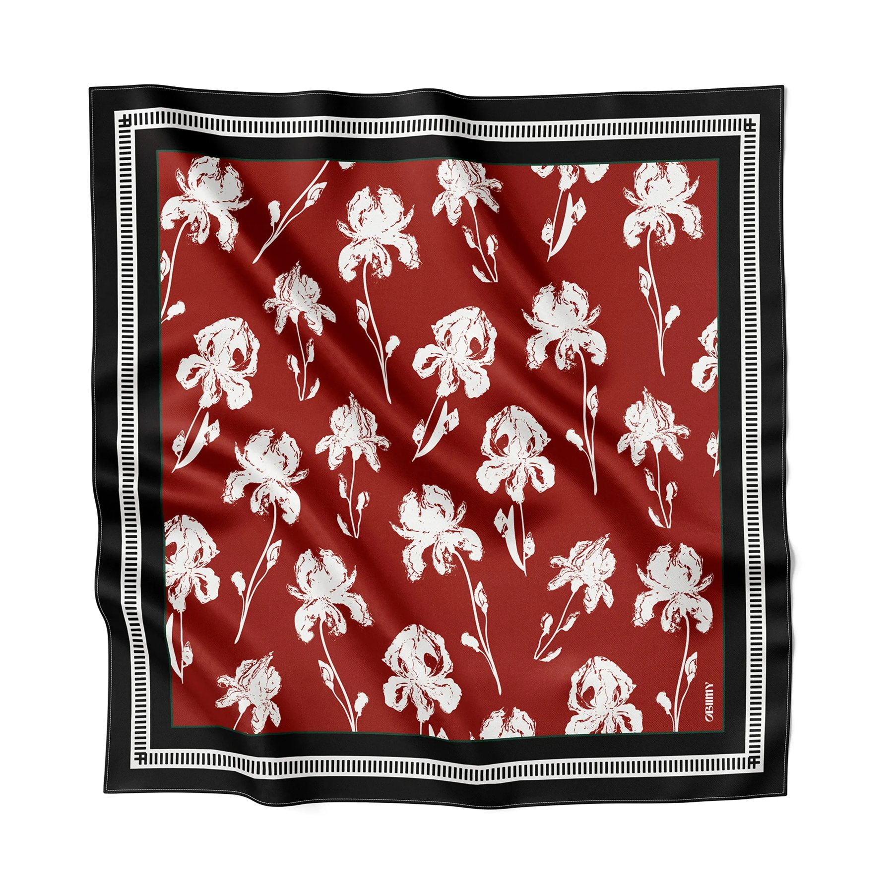
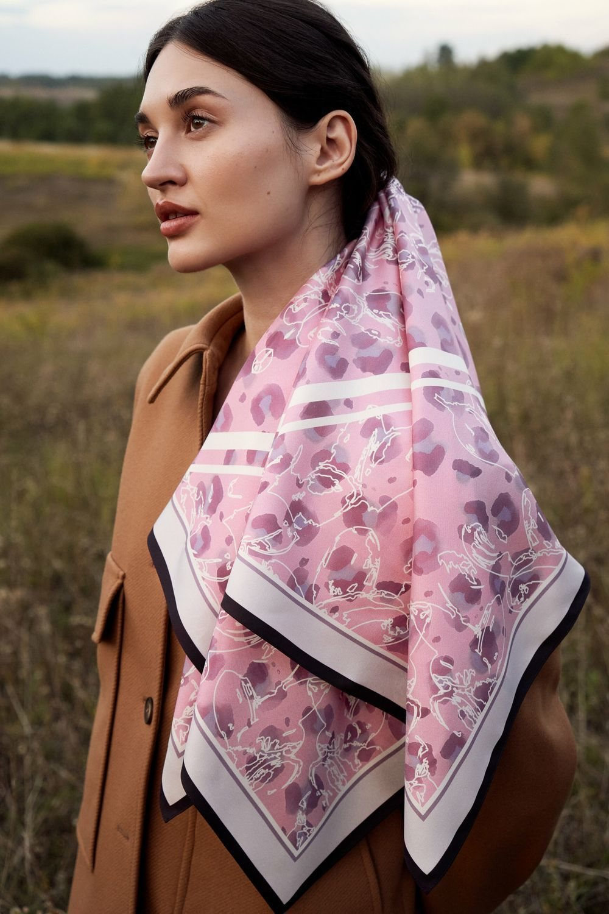
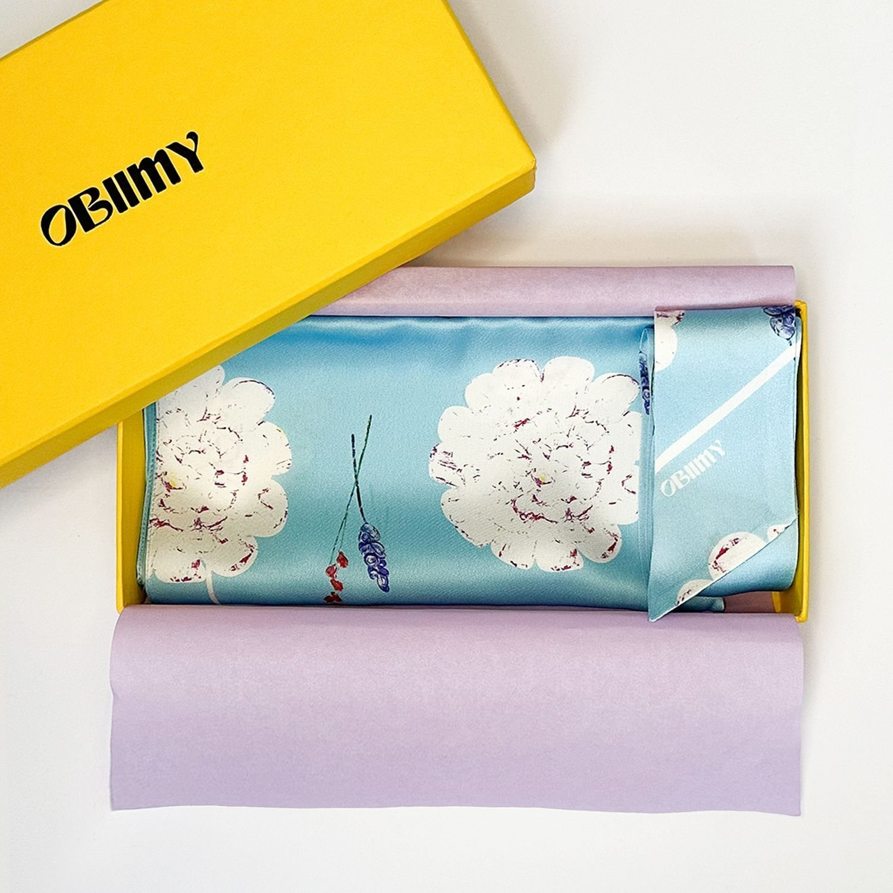
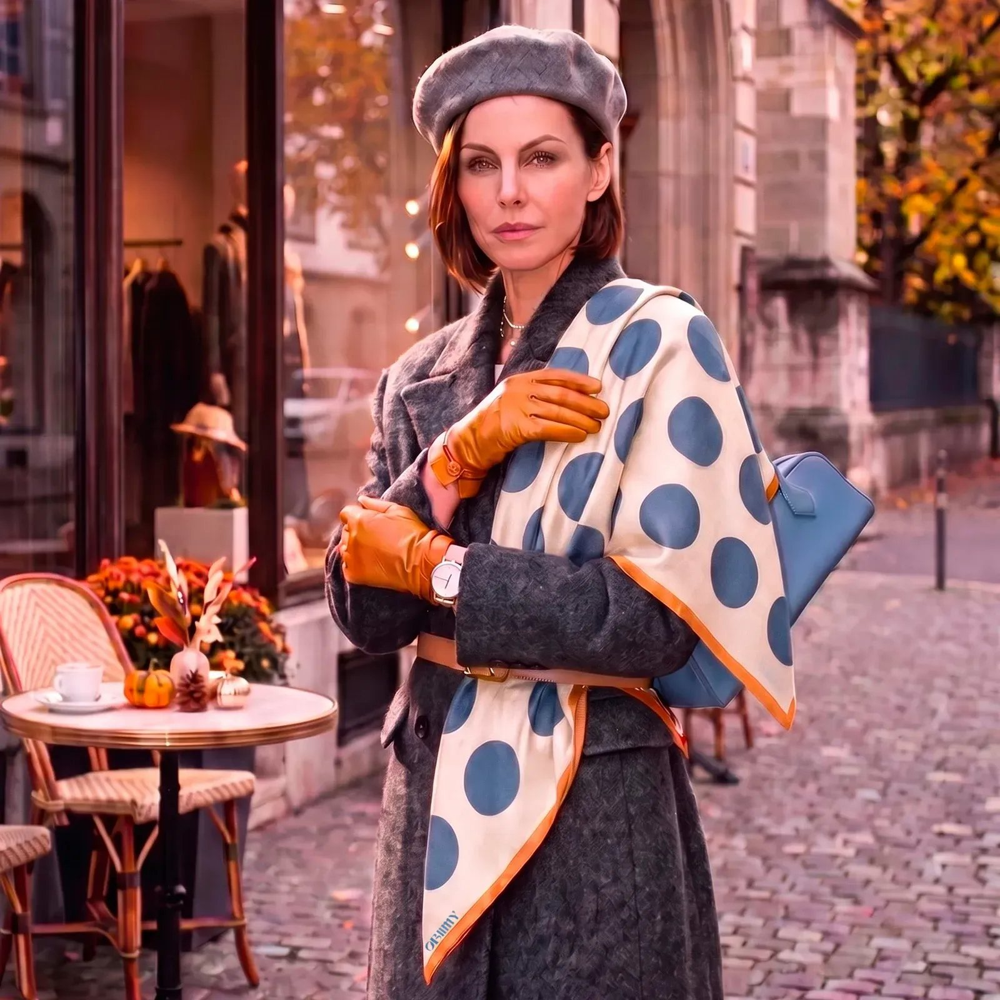
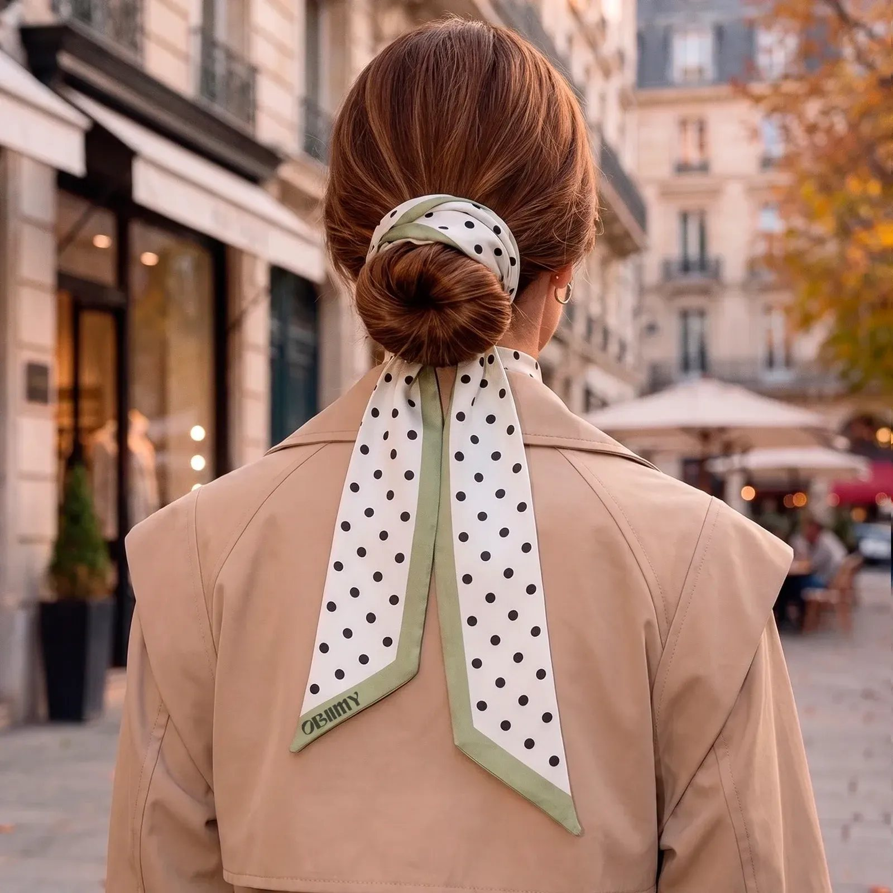
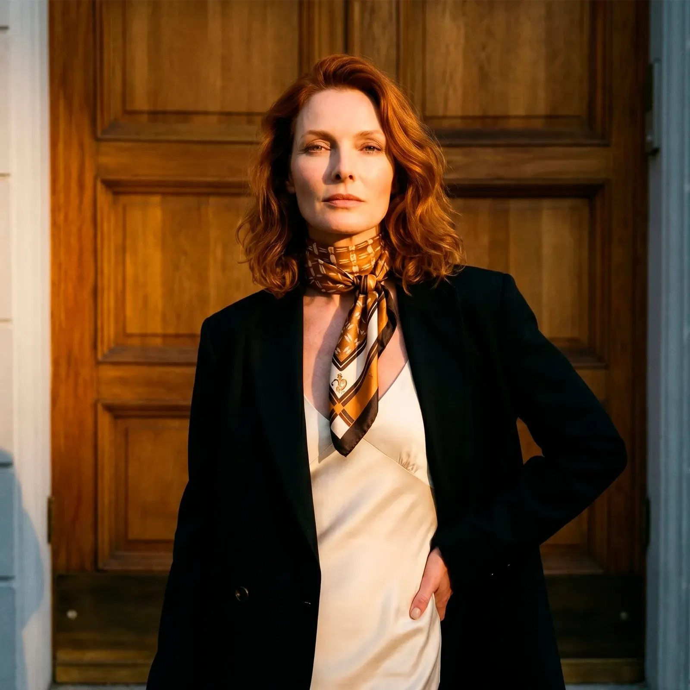
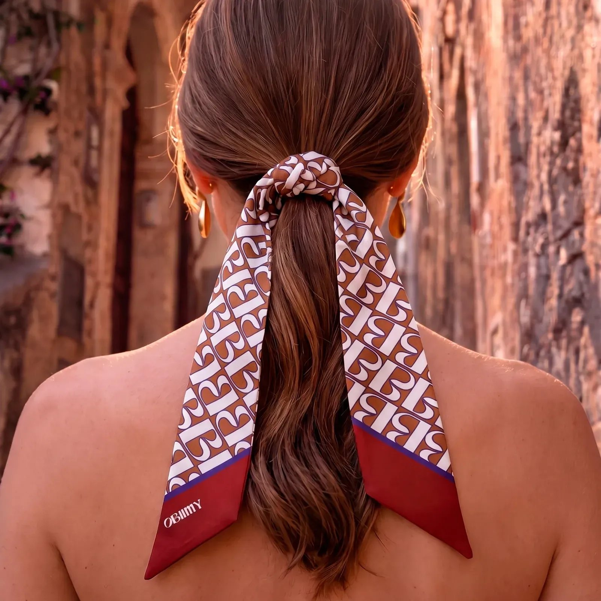
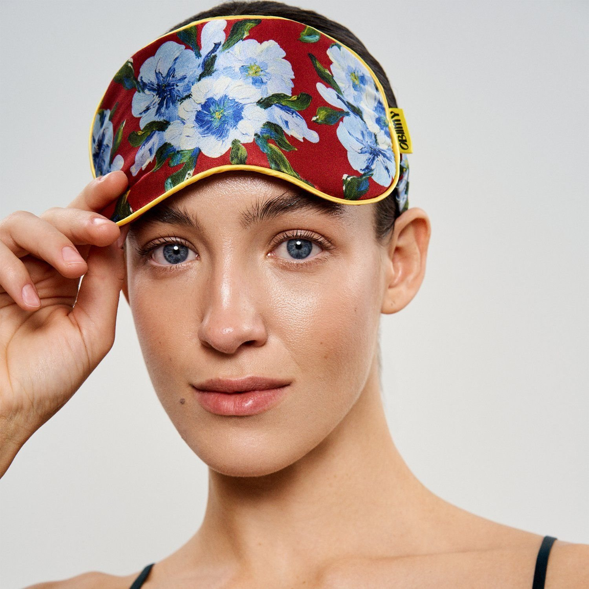

HomeCatalogAbout UsContact
Obiimy means «hugs» in Ukrainian. We make silk scarves, twillies and accessories with original prints by our founder, artist Svitlana Snizhko — and ship them from Kyiv to the world.
Who we are
Obiimy is an independent Ukrainian brand of natural silk products with original prints by artist and founder Svitlana Snizhko.
We create things that combine beauty, art and care — and give emotions from the first touch. Obiimy is about love for yourself, nature and people. Each box is a hug that reminds you that you are worthy of beauty.
Our brand is not only about beauty, but also about health. Silk is soft and gentle to the skin and does not cause irritation or allergic reactions — that is why it makes the best sleep masks, among other things.
Premium natural silk with a delicate shine and soft texture. Scarves are printed on both sides.
Every print starts as a painting by Svitlana Snizhko. No stock patterns, no licensed designs.
Seamstresses finish the corners of every scarf by hand, so the edge is even all the way round. Made in Ukraine.
Obiimy was born during the war and takes part in charitable initiatives for the military and those affected.
How a scarf is made

Svitlana paints the artwork; it becomes a print with its own name and story — like «Avantiura», «Tysha» or «Iskra».

The print goes onto 100% Italian silk. Seamstresses work on the corners of every scarf by hand, so the density along the edge is the same everywhere.

Each piece comes in Obiimy's gift packaging — ready to give, or to keep for yourself.
What we make
Scarves in three sizes (44, 65 and 88 cm), narrow twillies for the hair, neck or bag, silk scrunchies and sleep masks, home and care accessories, and jewellery for scarves. Collections like SOLO — the path to yourself bring seven prints, seven states of a woman on her way to herself.




«Obiimy is a combination of fragility, style, originality and extreme tenderness. We create not just accessories, but a way to express your own individuality and feelings. You deserve the best.»Svitlana Snizhko, founder and artist

Where to find us
We sell directly: worldwide through this store, in Ukraine through obiimy.world and our showroom in Kyiv, and through partner stores. We also make corporate gift sets for companies.